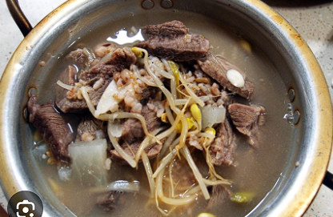
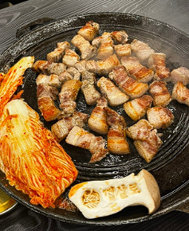

History 1: How Did Seocho-gu Develop?
Seocho-gu began to be developed into a modern urban area with the 1965 Seoul Metropolitan Basic Urban Plan. Following this, rapid urbanization took place every year through various projects, transforming it into a beautiful and livable advanced city as it is today.
And so, Seocho-gu has now become a city with a population of
History 2: Origin of the Name "Seocho"
The name "Seocho" originates from "Seoripul." During the Goguryeo period, rice was referred to as "Seohwa," and records indicate that rice from Seocho-dong was offered to the king. "Seocho" signifies a plant associated with good fortune, meaning "rice.". Additionally, Banpo, a neighborhood in Seocho-gu, originates from the word
History 3: When Did It Become Known as Seocho-gu?
The name Seocho-gu was first used on January 1, 1988, when Seocho-gu was separated from Gangnam-gu.
Popular Local food
🍲🍲🍲🍲🍲등심 국밥🍲🍲🍲🍲🍲
-
🍗🍗🍗🍗🍗치즈닭갈비🍗🍗🍗🍗🍗
-
🍖🍖🍖🍖🍖삼겹살🍖🍖🍖🍖🍖

- 🍔🍔🍔🍔🍔Handmade burger🍔🍔🍔🍔🍔

- 🍷🍷🍷🍷🍷Korean-French fusion food🍷🍷🍷🍷🍷
So, what is your favorite? input the number of food